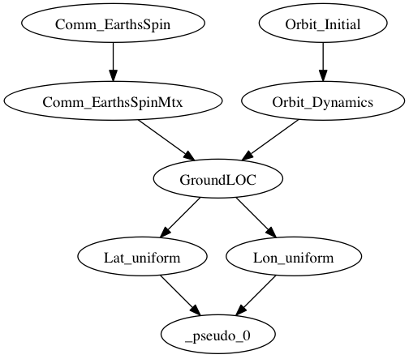
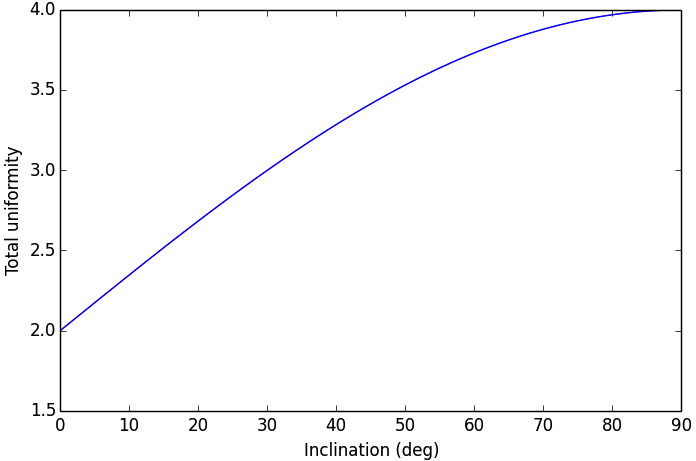

In this example, we will formulate a small-scale Assembly that will simply optimize the parameters of the CADRE satellite’s orbit for the scientific utility of the mission alone. This will demonstrate how to import individual components of the CADRE problem to construct new assemblies and also demonstrate some basic usage of OpenMDAO’s derivative system.
Specifically, we will optimize the values of the orbital altitude, the right ascension node (RAAN); inclination, and the argument of perigee (arg. perigee). The objective of this optimization will be to produce an orbit that passes over the widest range of ground locations over the course of a fixed period of time from launch (three days).
It’s expected that will be achieved by a polar orbit so that the dominant parameter of the problem is the orbital inclination. But strictly as an example, we can construct an assembly of components from CADRE and use an optimizer to illustrate this for us.
Several CADRE components will be imported and used to build this problem:
We will then define two additional components to include in this model:
Using these components, we will produce an OpenMDAO assembly with the following structure:
Here the component _pseudo_0() is the OpenMDAO pseudo-component that will be automatically constructed to compute our objective function expression.
To begin, in a new Python file, we first import the libraries that we will use, which include (among other things) the needed CADRE components, the standard OpenMDAO Component and Assembly classes, and the SLSQP optimization driver.
import numpy as np
from openmdao.main.api import Assembly, Component
from openmdao.lib.drivers.api import SLSQPdriver
from openmdao.main.datatypes.api import Float, Array, Int
from CADRE import Comm_EarthsSpin, Comm_EarthsSpinMtx
from CADRE import Orbit_Initial, Orbit_Dynamics
Now we define the assembly. We add the components and variables we need and the selected optimization driver, make connections between components, and configure the parameters of the optimization problem:
class CADRE_Launch(Assembly):
""" Allows for analysis of the launch parameters of CADRE.
Considers multiple launch parameters and their effects on
coverage of the Earth's thermosphere.
Ultimately, a launch that provides the most uniform sampling is
favorable, which is expected to be given by a polar orbit
(Inclination near 90). Other launch parameters are probably not
very useful in comparison.
"""
def __init__(self, n=200):
super(CADRE_Launch, self).__init__()
# Analysis parameters
self.n = n
self.add('t', Array(np.zeros((n,)), size=(n,),
dtype=np.float, iotype="in"))
self.add('t1', Float(0., iotype='in'))
self.add('t2', Float(259200., iotype='in'))
h = (self.t2 - self.t1) / (self.n - 1)
self.add("h", Float(h, iotype="in", copy=None))
self.t = np.array(range(0, n)) * h
self.add('driver', SLSQPdriver())
# Orbit components
self.add("Orbit_Initial", Orbit_Initial())
self.driver.workflow.add("Orbit_Initial")
self.Orbit_Initial.Inc = 0.1
self.add("Orbit_Dynamics", Orbit_Dynamics(n))
self.Orbit_Dynamics.force_fd = True
self.driver.workflow.add("Orbit_Dynamics")
self.add("Comm_EarthsSpin", Comm_EarthsSpin(n))
self.driver.workflow.add("Comm_EarthsSpin")
self.add("Comm_EarthsSpinMtx", Comm_EarthsSpinMtx(n))
self.driver.workflow.add("Comm_EarthsSpinMtx")
self.add("GroundLOC", GroundLOC(n))
self.driver.workflow.add("GroundLOC")
self.add("Lon_uniform", Uniformity(n))
self.driver.workflow.add("Lon_uniform")
self.add("Lat_uniform", Uniformity(n))
self.driver.workflow.add("Lat_uniform")
self.connect("t", "Comm_EarthsSpin.t")
self.connect("h", "Orbit_Dynamics.h")
self.connect("Comm_EarthsSpin.q_E", "Comm_EarthsSpinMtx.q_E")
self.connect("Comm_EarthsSpinMtx.O_IE", "GroundLOC.O_IE")
self.connect("Orbit_Initial.r_e2b_I0", "Orbit_Dynamics.r_e2b_I0")
self.connect("Orbit_Dynamics.r_e2b_I", "GroundLOC.r_e2b_I")
self.connect("GroundLOC.lats", "Lat_uniform.sample")
self.connect("GroundLOC.lons", "Lon_uniform.sample")
self.driver.add_objective("-Lat_uniform.k -Lon_uniform.k")
self.driver.add_parameter(
["Orbit_Initial.altPerigee", "Orbit_Initial.altApogee"],
low=500, high=1000)
self.driver.add_parameter(
"Orbit_Initial.RAAN", low=-180, high=180)
self.driver.add_parameter(
"Orbit_Initial.Inc", low=0, high=90)
self.driver.add_parameter(
"Orbit_Initial.argPerigee", low=0, high=90)
Note that the orbital altitude was specified as an optimization parameter by setting both the perigee and apogee values as a single input. This indicates to the optimization driver that we want to vary these two values together, which is sufficient for constraining the optimization to circular orbits of a set altitude.
The GroundLOC() component is implemented next, with derivatives defined using the linearize, apply_deriv, and apply_derivT methods. In this case, the derivative expressions were determined using a computer algebra system:
class GroundLOC(Component):
""" Gives the lat and lon location of the ground beneath a satellite
"""
Re = 6378.137
r2d = 180 / np.pi
def __init__(self, n):
super(GroundLOC, self).__init__()
self.n = n
self.add('O_IE', Array(np.zeros((3, 3, self.n)), iotype='in'))
self.add('r_e2b_I', Array(np.zeros((6, self.n)), iotype='in'))
self.add('lats', Array(np.zeros(self.n), iotype='out'))
self.add('lons', Array(np.zeros(self.n), iotype='out'))
def linearize(self):
self.J = np.zeros((self.n, 2, 3))
self.J_O_IE = np.zeros((self.n, 2, 3, 3))
for i in xrange(self.n):
O = self.O_IE[:, :, i].T
r = self.r_e2b_I[:3, i]
d = self.r2d
self.J[i, 0, 0] = self.d_lat(
O[2, 0], O[2, 1], O[2, 2], d, r[0], r[1], r[2])
self.J[i, 0, 1] = self.d_lat(
O[2, 1], O[2, 0], O[2, 2], d, r[1], r[0], r[2])
self.J[i, 0, 2] = self.d_lat(
O[2, 2], O[2, 1], O[2, 0], d, r[2], r[1], r[0])
self.J[i, 1, 0] = self.d_lon(O[1, 0], O[1, 1], O[1, 2], d,
O[0, 0], O[0, 1], O[0, 2], r[0], r[1], r[2])
self.J[i, 1, 1] = self.d_lon(O[1, 1], O[1, 0], O[1, 2], d,
O[0, 1], O[0, 0], O[0, 2], r[1], r[0], r[2])
self.J[i, 1, 2] = self.d_lon(O[1, 2], O[1, 1], O[1, 0], d,
O[0, 2], O[0, 1], O[0, 0], r[2], r[1], r[0])
def apply_deriv(self, arg, result):
if 'r_e2b_I' in arg:
for i in xrange(self.n):
if 'lats' in result:
result['lats'][i] += np.dot(self.J[i, 0, :], arg['r_e2b_I'][:3, i])
if 'lons' in result:
result['lons'][i] += np.dot(self.J[i, 1, :], arg['r_e2b_I'][:3, i])
def apply_derivT(self, arg, result):
if 'lats' in arg:
result['r_e2b_I'][0, :] += arg['lats'] * self.J[:, 0, 0]
result['r_e2b_I'][1, :] += arg['lats'] * self.J[:, 0, 1]
result['r_e2b_I'][2, :] += arg['lats'] * self.J[:, 0, 2]
if 'lons' in arg:
result['r_e2b_I'][0, :] += arg['lons'] * self.J[:, 1, 0]
result['r_e2b_I'][1, :] += arg['lons'] * self.J[:, 1, 1]
result['r_e2b_I'][2, :] += arg['lons'] * self.J[:, 1, 2]
def d_lat(self, a, b, c, d, x, y, z):
return -(d * (-a * (y ** 2 + z ** 2) + b * x * y + c * x * z)) / (np.sqrt((x ** 2 + y ** 2 + z ** 2) ** 3) *
np.sqrt(-((a ** 2 - 1) * x ** 2 + 2 * a * x * (b * y + c * z) + (b ** 2 - 1) * y ** 2 + 2 * b * c * y * z + (c ** 2 - 1) * z ** 2) / (x ** 2 + y ** 2 + z ** 2)))
def d_lon(self, a, b, c, d, e, f, g, x, y, z):
num = -(d * (-a * (f * y + g * z) + b * e * y + c * e * z))
denom = (a ** 2 * x ** 2 + 2 * a * x * (b * y + c * z) + b ** 2 * y ** 2 + 2 * b * c * y * z + c ** 2 *
z ** 2 + e ** 2 * x ** 2 + 2 * e * x * (f * y + g * z) + f ** 2 * y ** 2 + 2 * f * g * y * z + g ** 2 * z ** 2)
if not denom:
return 0.
else:
return num / denom
def d_lat_O_IE(self, a, b, c, d, x, y, z):
return d * a / (np.sqrt(a ** 2 + b ** 2 + c ** 2) * np.sqrt(1 - (a * x + b * y + c * z) ** 2 / (a ** 2 + b ** 2 + c ** 2)))
def d_lon_O_IE(self, a, b, c, d, w, v, u, x, y, z,):
return -d * (a * (a * w + b * v + c * u)) / (a ** 2 * (w ** 2 + x ** 2) + 2 * c * (a * u * w + a * x * z + b * u * v + b * y * z) + 2 * a * b * (v * w + x * y) + b ** 2 * (v ** 2 + y ** 2) + c ** 2 * (u ** 2 + z ** 2))
def execute(self):
self.npos = np.zeros((self.n, 3))
self.g_pos = np.zeros((self.n, 3))
for i in xrange(self.n):
self.pos = self.r_e2b_I[:3, i]
self.npos[i, :] = self.pos / np.linalg.norm(self.pos, 2) * self.Re
self.g_pos[i, :] = np.dot(self.O_IE[:,:, i].T, self.npos[i,:])
self.lats[i] = np.arcsin(self.g_pos[i, 2] / self.Re) * self.r2d
self.lons[i] = np.arctan2(
self.g_pos[i, 1], self.g_pos[i, 0]) * self.r2d
Next, the Uniformity() component is defined. For this component, instead of implementing derivatives using apply_deriv and apply_derivT, we will use the provideJ method (for example purposes) to supply the full Jacobian matrix:
class Uniformity(Component):
"""
Computes the maximum value minus the minimum
value of a 1D array
"""
def __init__(self, n):
super(Uniformity, self).__init__()
self.n = n
self.add('sample', Array(iotype='in'))
self.add('k', Float(0., iotype='out'))
def execute(self):
self.k = max(self.sample) - min(self.sample)
If you wanted to quickly visualize the dependence of the objective function on the orbital inclination parameter, you could comment out the portions of the assembly related to the optimization driver and run:
import pylab
a = CADRE_Launch(1000)
v = []
for i in xrange(91):
a.Orbit_Initial.Inc = i
a.run()
vv = a.Lat_uniform.k + a.Lon_uniform.k
v.append(vv)
pylab.plot(v)
pylab.ylabel("Total uniformity")
pylab.xlabel("Inclination (deg)")
pylab.show()
Which would produce the following figure:
This indicates that the objective function is roughly linearly dependent on the orbital inclination, with the optimal inclination near 90 (as expected). The minimal positive value (seen at an inclination of 0) is entirely due to longitudinal variance, since 0 inclination corresponds to an equatorial orbit (with no variance in latitude). At an optimal inclination of 90, the satellite is orbiting from pole to pole (maximum latitudinal variance), while the rotation of the Earth beneath the satellite still allows for wide sampling of longitudes over the course of several orbital passes. Now we can run and check this on the complete optimization problem:
import time
tt = time.time()
a = CADRE_Launch(1000)
a.run()
l1, l2 = a.GroundLOC.lats, a.GroundLOC.lons
print "min/max lats:", min(l1), max(l1)
print "min/max lons:", min(l2), max(l2)
print "objective:", a.Lat_uniform.k + a.Lon_uniform.k
print(a.Orbit_Initial.altPerigee,
a.Orbit_Initial.altApogee,
a.Orbit_Initial.RAAN,
a.Orbit_Initial.Inc,
a.Orbit_Initial.argPerigee)
print "Elapsed time: ", time.time() - tt, "seconds"
print 30 * "-"
This output should indicate that an inclination between 80 and 90 is optimal for uniform sampling of the atmosphere. This example is implemented in example_launch.py, in the top-level directory of the CADRE plugin repository, and can be run directly.
{kind=link}
{kind=link}